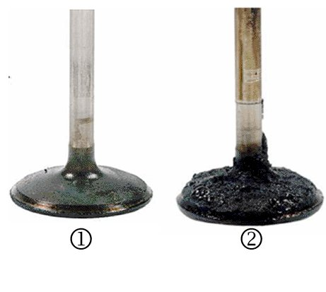
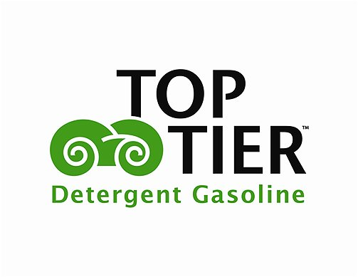
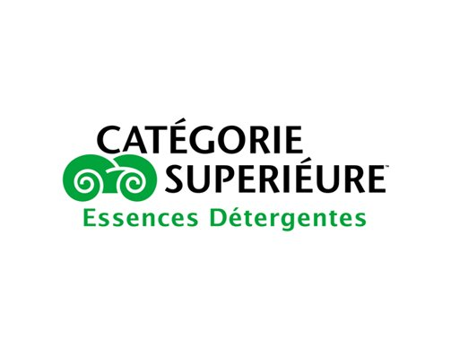

Fuel System - TOP TIER Detergent Gasoline Information (Canada)
INFORMATIONBulletin No.: 05-06-04-022I
Date: July 19, 2012
Subject: -TOP TIER Detergent Gasoline Information and Available Brands (Deposits, Fuel Economy, No Start, Power, Performance, Stall Concerns) Canada ONLY
Models:
2013 and Prior GM Passenger Cars and Trucks (Canada Only)
Supercede:
This bulletin is being revised to update model years. Please discard Corporate Bulletin Number 05-06-04-022H (Section 06 - Engine/Propulsion System). In the U.S., refer to the latest version of Corporate Bulletin Number 04-06-04-047.
A new class of fuel called TOP TIER Detergent Gasoline is appearing at retail stations of some fuel marketers. This gasoline meets detergency standards developed by six automotive companies. All vehicles will benefit from using TOP TIER Detergent Gasoline over gasoline containing the "Lowest Additive Concentration" recommended by the Canadian General Standards Board (CGSB). Those vehicles that have experienced deposit related concerns may especially benefit from use of TOP TIER Detergent Gasoline.

Top Tier Fuel Availability
Chevron was the first to offer TOP TIER Detergent Gasoline in Canada. Shell became the first national gasoline retailer to offer TOP TIER Detergent Gasoline across Canada. Petro-Canada began offering TOP TIER Detergent Gasoline nationally as of October 1, 2006. Esso began offering TOP TIER Detergent Gasoline in May of 2010.


Gasoline Brands That Currently Meet TOP TIER Detergent Gasoline Standards
The following gasoline brands meet the TOP TIER Detergent Gasoline Standards in all octane grades :
- Chevron Canada (markets in British Columbia and western Alberta)
- Shell Canada (nationally)
- Petro-Canada (nationally)
- Esso-Canada (nationally)
- Sunoco-Canada (Ontario)
What is TOP TIER Detergent Gasoline?
TOP TIER Detergent Gasoline is a new class of gasoline with enhanced detergency and no metallic additives. It meets new, voluntary deposit control standards developed by six automotive companies that exceed the detergent recommendations of Canadian standards and does not contain metallic additives, which can damage vehicle emission control components.
Where Can TOP TIER Detergent Gasoline Be Purchased?
The TOP TIER program began in the U.S. and Canada on May 3, 2004. Some fuel marketers have already joined and introduced TOP TIER Detergent Gasoline. This is a voluntary program and not all fuel marketers will offer this product. Once fuel marketers make public announcements, they will appear on a list of brands that meet the TOP TIER standards.
Who developed TOP TIER Detergent Gasoline standards?
TOP TIER Detergent Gasoline standards were developed by six automotive companies: BMW, General Motors, Honda, Toyota, Volkswagen and Audi.
Why was TOP TIER Detergent Gasoline developed?
TOP TIER Detergent Gasoline was developed to increase the level of detergent additive in gasoline. In the U.S., government regulations require that all gasoline sold in the U.S. contain a detergent additive. However, the requirement is minimal and in many cases, is not sufficient to keep engines clean. In Canada, gasoline standards recommend adherence to U.S. detergency requirements but do not require it. In fact, many brands of gasoline in Canada do not contain any detergent additive. In order to meet TOP TIER Detergent Gasoline standards, a higher level of detergent is needed than what is required or recommended, and no metallic additives are allowed. Also, TOP TIER was developed to give fuel marketers the opportunity to differentiate their product.
Why did the six automotive companies join together to develop TOP TIER?
All six corporations recognized the benefits to both the vehicle and the consumer. Also, joining together emphasized that low detergency and the intentional addition of metallic additives is an issue of concern to several automotive companies.
What are the benefits of TOP TIER Detergent Gasoline?
TOP TIER Detergent Gasoline will help keep engines cleaner than gasoline containing the "Lowest Additive Concentration" recommended by Canadian standards. Clean engines help provide optimal fuel economy and engine performance, and also provide reduced emissions. Also, the use of TOP TIER Detergent Gasoline will help reduce deposit related concerns.
Who should use TOP TIER Detergent Gasoline?
All vehicles will benefit from using TOP TIER Detergent Gasoline over gasoline containing the "Lowest Additive Concentration" recommended by Canadian standards. Those vehicles that have experienced deposit related concerns may especially benefit from use of TOP TIER Detergent Gasoline. More information on TOP TIER Detergent Gasoline can be found at this website, http://www.toptiergas.com/.

Disclaimer